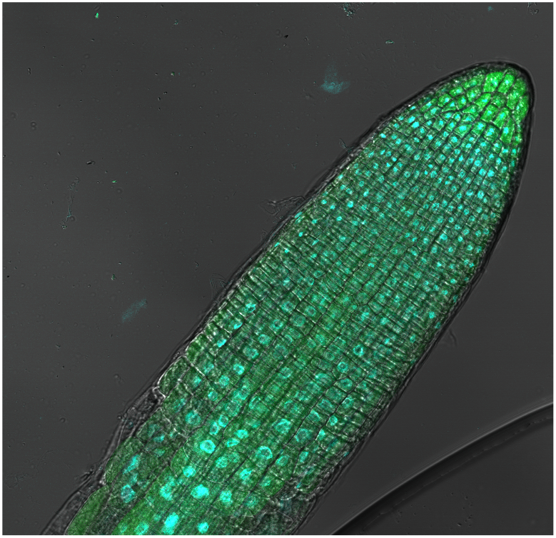
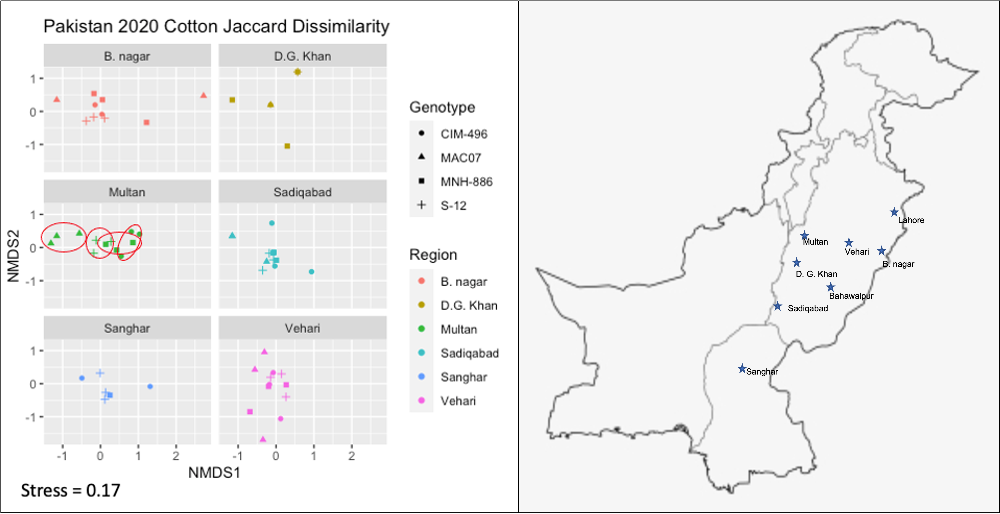

Research
Science does not occur in a vacuum. I have had the opportunity to collaborate and work with many researchers from many cultures and disciplines. Because of this, I have picked up a plethora of skills for my toolbox.
Virus Bioreporters in planta
Part of my passion for science is to come up with new techniques that can be adopted in cropping systems to increase the efficiency of production. This led me to design and develop a virus bioreporter in plants that can signal virus infection to technicians. The proof of concept is currently being developed in A. thaliana with funding from the NSF by way of the Center for Research on Programmable Plants Systems (CROPPS).

Currently this bioreporter can signal which cells are infected with a plant virus from many viral taxa, but it will be deployed as a rapid virus bioreporter to signal to farmers that viruses are in the fields, potentially impacting their yields.
Transgenic viral resistance in planta
Viruses can’t be treated with agrochemicals because they carry out their processes inside plant cells. This means that their insect vectors (transmission agents) are often targeted through agrochemicals. This can be harmful to a number of organisms in the environment, such as pollinators. I have worked on transgenic strategies to target the virus pathogens within the plant cells such as RNAi and CRISPR.

These strategies, however, put a strong selective pressure on virus populations, which evolve to break these transgenic resistances. This resistance breaking can happen within 3 years, and can negate all of the hard work that went in to engineering plants to be resitant to viruses. In light of this, I am working on two concepts that will use techniques of synthetic regulatory networks in plants to build new, robust, transgenic resistance in plants.
Virus surveillance
As researchers, breeders, and farmers try to introduce new resistant plant cultivars, plant viral populations and communities can shift in the new environment of resistance. This selection can have a signature in virus communities that can be detected. I have been working on developing automated pipelines as part of a high-throughput surveillance tool that can help aid breeders and researchers in how virus communities and populations are shifting in the environment. Check out the repo for the tool I developed here: ViCAT!

Molecular Biology Techniques:
Molecular Cloning: Restriction cloning, Gateway Cloning, Gibson Cloning
Sequence Amplification: PCR, qPCR, RT-PCR, ddPCR, dsRNA amplification, in vitro transcription, mature miRNA RT-qPCR, 5’ and 3’ RACE, the list goes on…
Plant Transformation Techniques: Biolistic delivery and agrobacterium
Stable Transformation Organisms: E. coli, A. tumefaciens, P. syringae, A. thaliana, G. hirsutum
Transient Transformation Organisms: N. benthamiana, A. thaliana, E. coli, A. tumefaciens, T. cacao, V. vinifera, Piper spp., and G. hirsutum
Gene/Genome editing/engineering: Cas9 and Cas12a, transposon mutagenesis, T-DNA insertions, site directed mutagenesis
Sequencing: Sanger, Nanopore, and Illumina
Synthetic biology: Design gene regulatory networks, amiRNA design, design of RNAi for disease resistance, Cas9 and Cas12a plant virus resistance,
Microscopy: Widefield, fluorescence, and confocal
Bioinformatics Techniques:
Coding Languages: Python, Bash, and R
Computing: Local computing with GUI’s, cloud computing with XSEDE and JETstream2, and remote High performance computing
Genome assembly software: SPAdes, bowtie, bowtie2, Trinity, and BWA
Multiple sequence alignment software: MEGA, CD-HIT, MAUVE, MAFFT, MEGAN, SDT, CLUSTALW, MUSCLE
Phylogenetics: RaXML, PHYLIP, BEAST, Mr. Bayes, MEGA, Geneious, and PhyML
Sequence identification and annotation: BLAST, NCBI ORF finder, Geneious
Community Ecology: Phyloseq, Qiime
Version control/reproducible science: GitHub, protocols.io, Jupyter notebooks, R-studio, Anaconda, Docker containers and singularity
Other relevant skills/tools: Container orchestration with kubernetes, large data management, and automation of pipelines and processes